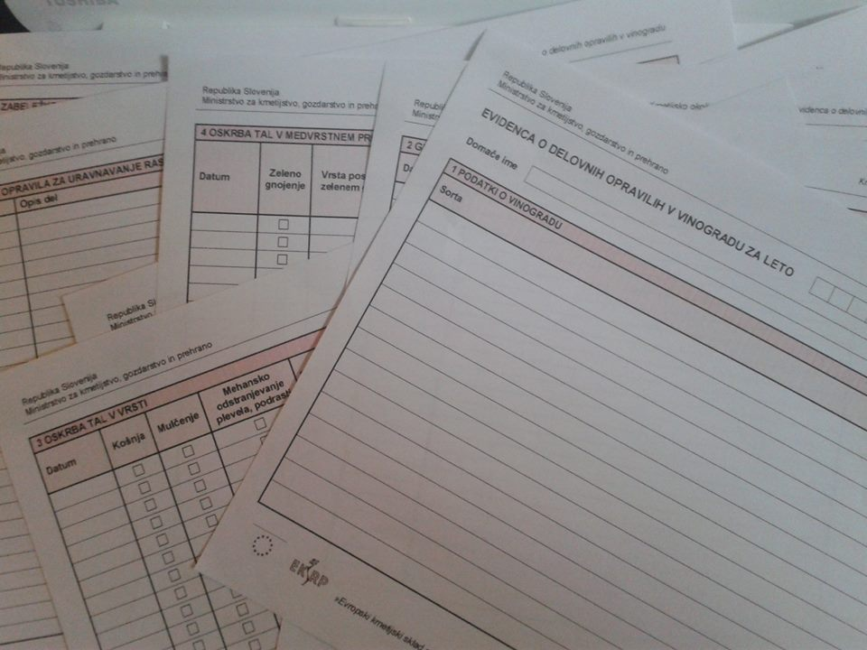

Vinogradnik mora poleg skrbi za vinograd tudi redno beležiti opravila v vinogradu. Evidenca je potrebna zaradi boljšega pregleda vseh opravil, predvsem škropljenja, hkrati pa je nujna zaradi rednih državnih pregledov.
Evidenco sestavlja kar nekaj »papirologije«, ki jo lahko izpolnjujemo ročno ali elektronsko. Voditi jo moramo za vsak vinograd posebej. V navodilih za vodenje in izpolnjevanje Evidenc o delovnih opravilih za kmetijsko okoljske podukrepe je izpolnjevanje jasno opredeljeno. Najprej je treba vpisati splošne podatke o vinogradu (GERK, površina, sorta itd.), nato se nadaljuje izpolnjevanje:
 Številni obrazci, ki jih vinogradnik mora izpolnjevati.Gnojenje: kdaj in s čim smo gnojili ter količino porabljenega gnojila. Označiti moramo, kdaj je bila nazadnje narejena analiza tal.
Oskrba tal: Redno vpisujemo vsa opravila, ki jih naredimo v vinogradu (košnja, mulčenje, odstranjevanje plevela, valjanje itd.).
Zatiranje bolezni in škodljivcev: V tej točki moramo še posebej pozorno in natančno izpolniti podatke, saj nam ti koristijo za nadaljnje načrtovanje škropljenja. Vpišemo ime bolezni, škodljivca ali plevela, datum zatiranja in prag škodljivosti. Označimo, ali smo zatirali na podlagi občutka oziroma prognoze, ter napišemo, kje smo pridobili informacije o škropljenju.
Način zatiranja: Opišemo ukrep, ki smo ga uporabili za zatiranja (mehanski, biološki, biotehnični in biodinamični).
Zabeležke: Na koncu imamo prostor za pisanje zabeležk, kamor vpisujemo svoja opažanja in opombe.
Učinkovite in preprosta rešitev, ki jo razvijamo v Vitilabu.Vodenje evidence nekaterim vinogradnikom predstavlja »napor« in »nepotrebno« delo, v Vitilabu pa smo se odločili evidenco poenostaviti in jo narediti vinogradniku bolj pregledno ter dostopno. V Vitilab dnevnik lahko vpisujete opravila v vinogradu in si na enostaven način sproti vodite evidenco, hkrati pa imate pregled in primerjave med posameznimi dnevi, meseci in leti.